Illustrated quantile calculations from distributions
qdist( dist = "norm", p, plot = TRUE, verbose = FALSE, invisible = FALSE, resolution = 500L, digits = 3L, xlim, ylim, return = c("values", "plot"), refinements = list(), ... ) xqgamma( p, shape, rate = 1, scale = 1/rate, lower.tail = TRUE, log.p = FALSE, ... ) xqt(p, df, ncp, lower.tail = TRUE, log.p = FALSE, ...) xqchisq(p, df, ncp = 0, lower.tail = TRUE, log.p = FALSE, ...) xqf(p, df1, df2, lower.tail = TRUE, log.p = FALSE, ...) xqbinom(p, size, prob, lower.tail = TRUE, log.p = FALSE, ...) xqpois(p, lambda, lower.tail = TRUE, log.p = FALSE, ...) xqgeom(p, prob, lower.tail = TRUE, log.p = FALSE, ...) xqnbinom(p, size, prob, mu, lower.tail = TRUE, log.p = FALSE, ...) xqbeta(p, shape1, shape2, ncp = 0, lower.tail = TRUE, log.p = FALSE, ...)
| dist | a character description of a distribution, for example
|
|---|---|
| p | a vector of probabilities |
| plot | a logical indicating whether a plot should be created |
| verbose | a logical |
| invisible | a logical |
| resolution | number of points used for detecting discreteness and generating plots. The default value of 5000 should work well except for discrete distributions that have many distinct values, especially if these values are not evenly spaced. |
| digits | the number of digits desired |
| xlim | x limits. By default, these are chosen to show the central 99.8\ of the distribution. |
| ylim | y limits |
| return | If |
| refinements | A list of refinements to the plot. See |
| ... | additional arguments, including parameters of the distribution
and additional options for the plot. To help with name collisions (eg |
| shape | shape and scale parameters. Must be positive,
|
| rate | an alternative way to specify the scale. |
| scale | shape and scale parameters. Must be positive,
|
| lower.tail | logical; if TRUE (default), probabilities are \(P[X \le x]\), otherwise, \(P[X > x]\). |
| log.p | logical; if |
| df | degrees of freedom (\(> 0\), maybe non-integer). |
| ncp | non-centrality parameter \(\delta\);
currently except for |
| df1 | degrees of freedom. |
| df2 | degrees of freedom. |
| size | number of trials (zero or more). |
| prob | probability of success on each trial. |
| lambda | vector of (non-negative) means. |
| mu | alternative parametrization via mean: see ‘Details’. |
| shape1 | non-negative parameters of the Beta distribution. |
| shape2 | non-negative parameters of the Beta distribution. |
a vector of quantiles; a plot is printed as a side effect
The most general function is qdist which can work with
any distribution for which a q-function exists. As a convenience, wrappers are
provided for several common distributions.
qdist("norm", seq(.1, .9, by = 0.10), title = "Deciles of a normal distribution", show.legend = FALSE, pattern = "rings")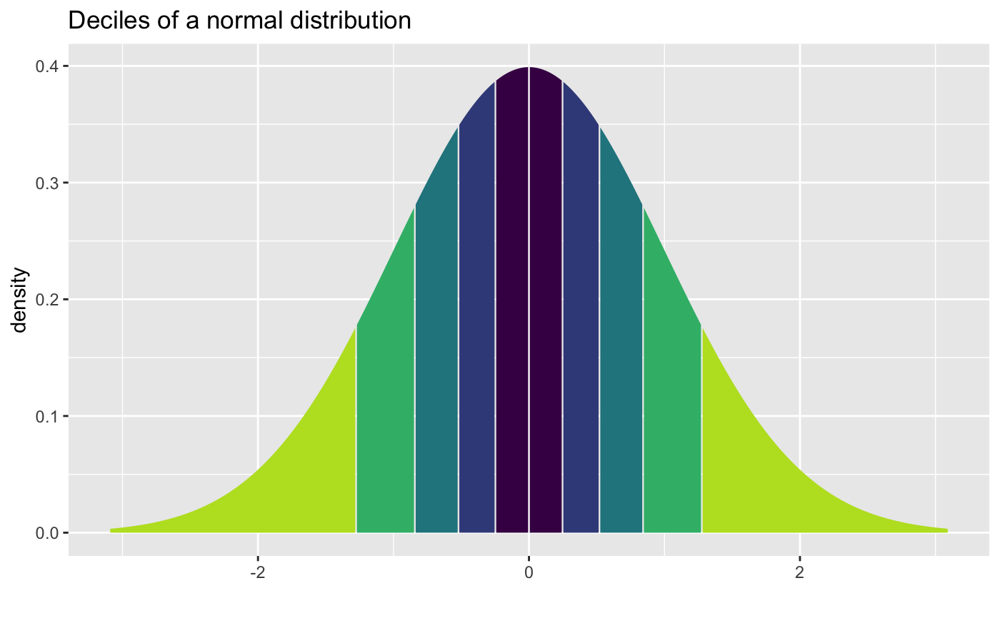#> [1] -1.2815516 -0.8416212 -0.5244005 -0.2533471 0.0000000 0.2533471 0.5244005 #> [8] 0.8416212 1.2815516#>#>#>#>#>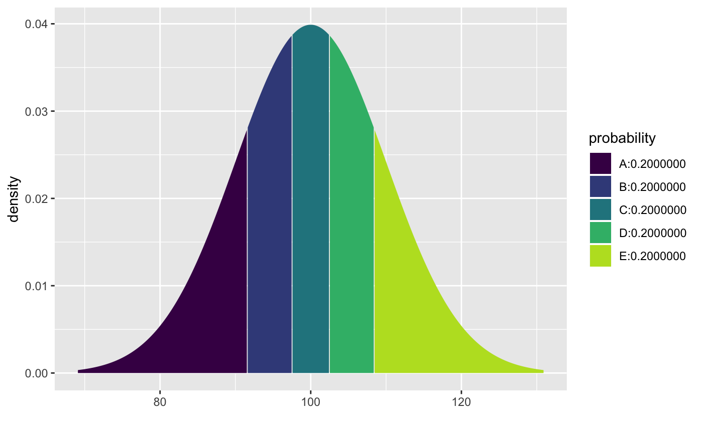#> [1] 91.58379 97.46653 102.53347 108.41621qdist("unif", .5)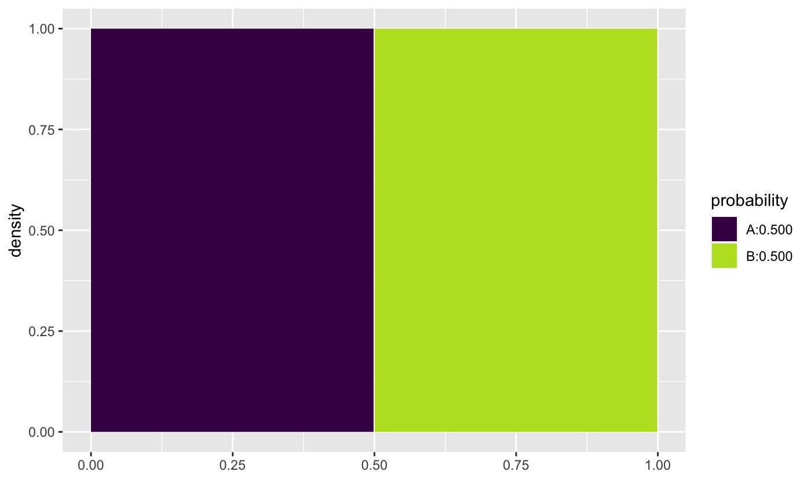#> [1] 0.5xqgamma(.5, shape = 3, scale = 4)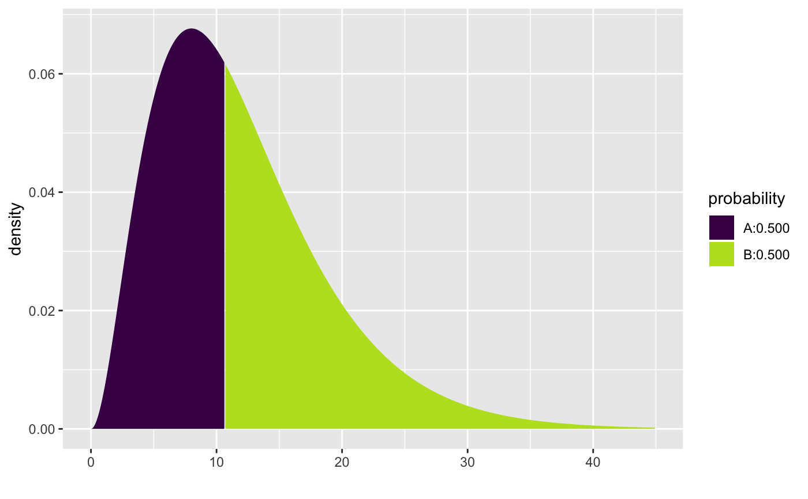#> [1] 10.69624xqgamma(.5, shape = 3, scale = 4, color = "black")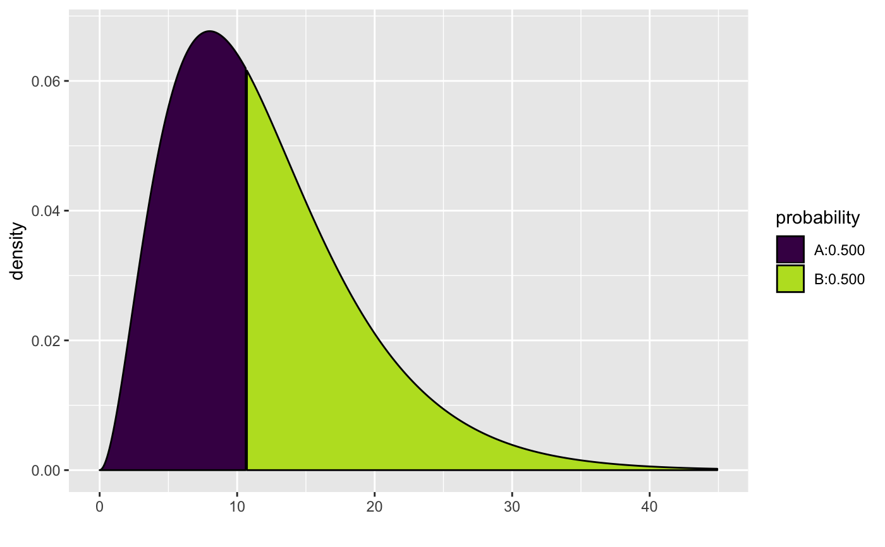#> [1] 10.69624xqbeta(.5, shape1 = .9, shape2 = 1.4, dlwd = 1)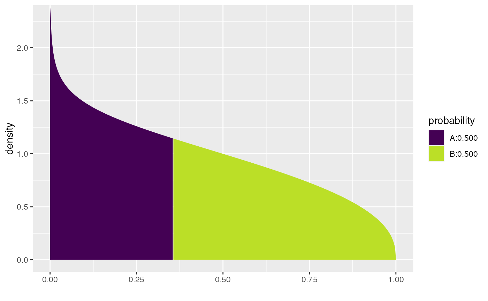#> [1] 0.3557401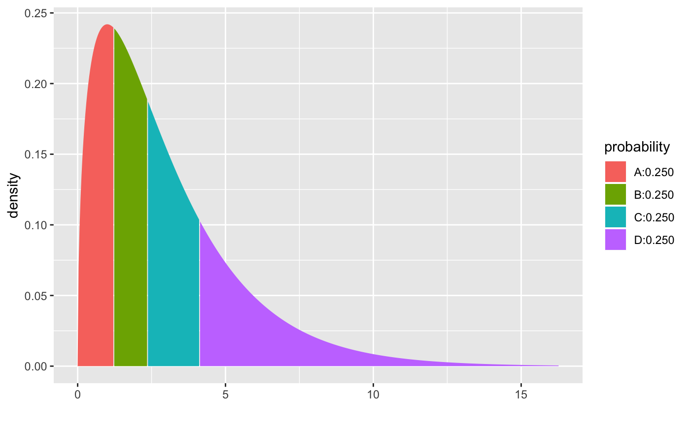#> [1] 1.212533 2.365974 4.108345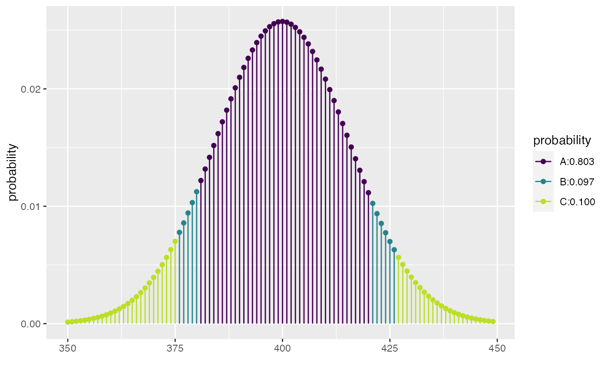#> [1] 375 380 420 426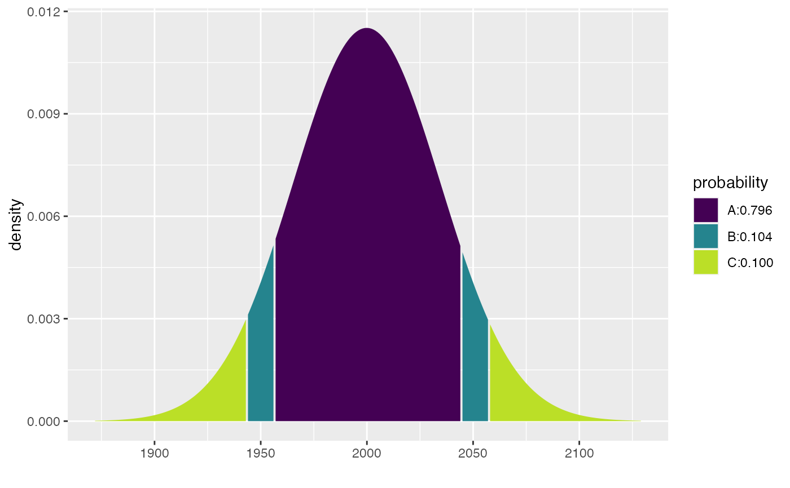#> [1] 1943 1956 2044 2057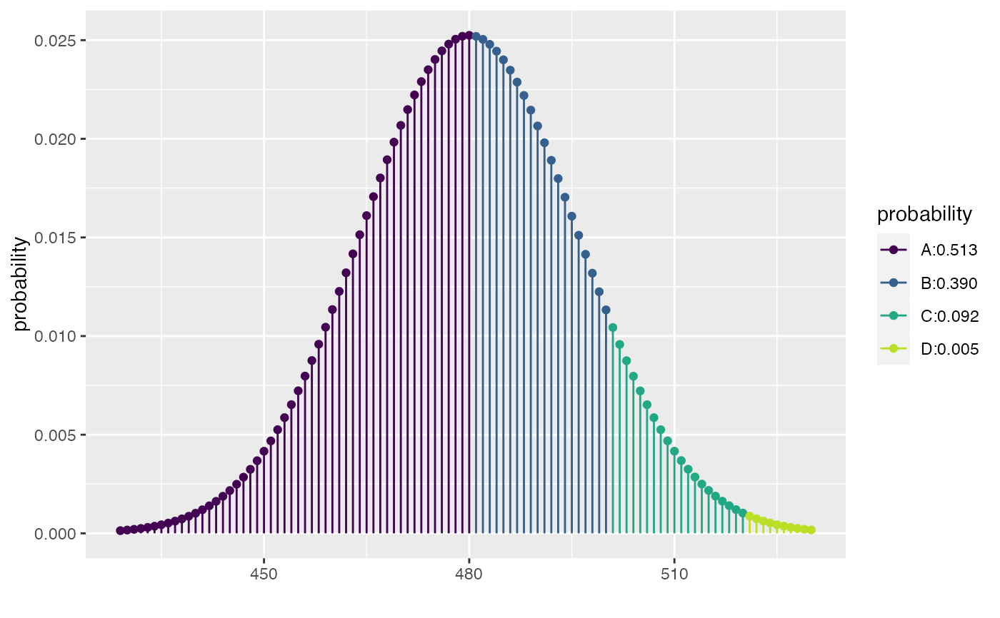#> [1] 0.5127908 0.9027460 0.9948015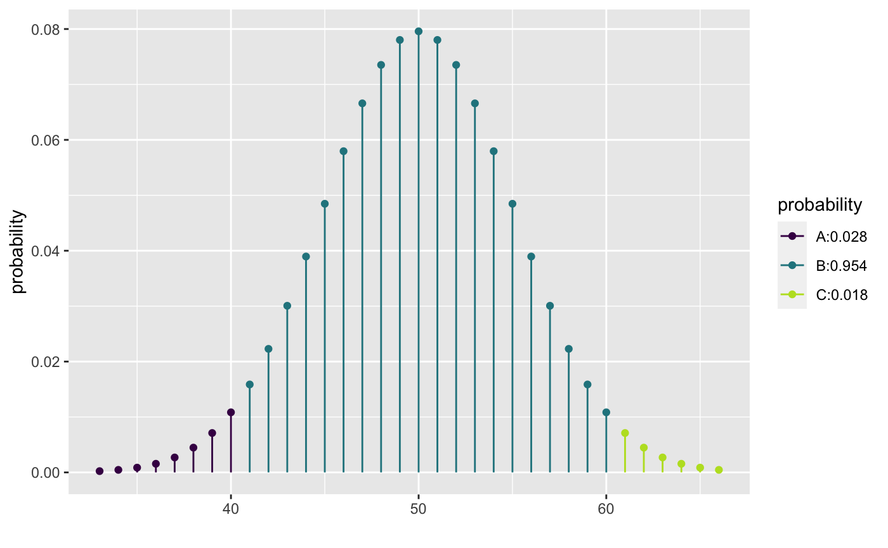#> [1] 0.02844397 0.98239990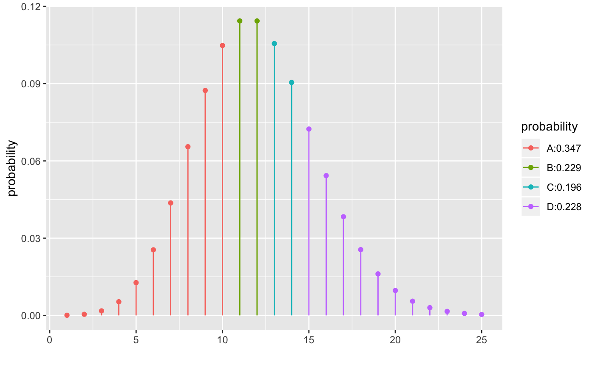#> [1] 10 12 14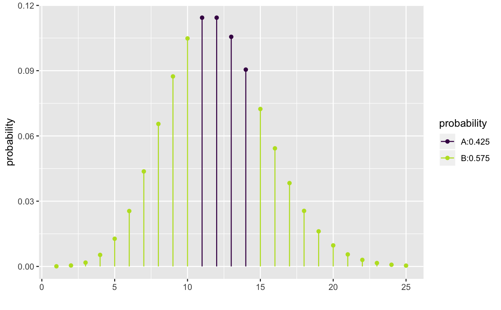#> [1] 10 14#> #>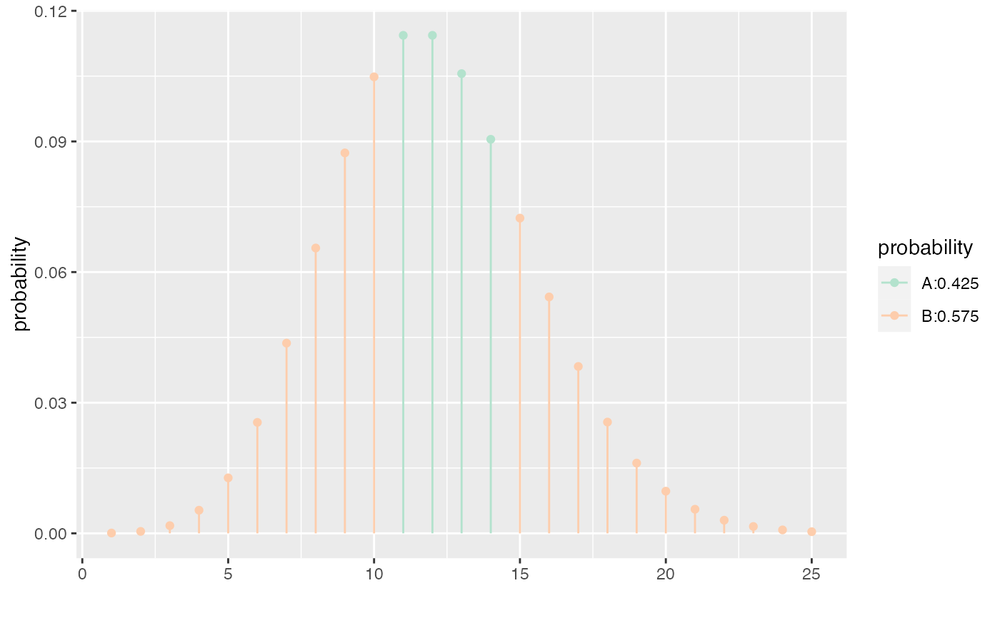#> [1] 10 14